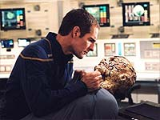
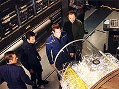
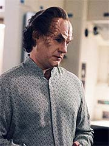
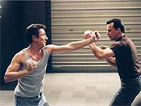

|

|
|
MANCHETE
DO EPISDIO
|
Segmento
regular serve apenas para
introduzir os construtores das Esferas
Episdio
anterior | Prximo
episdio
Sinopse:
Trip est em seu quarto com a MACO Amanda Cole, aplicando neuropresso em seus ps e costas. Eles esto falando sobre Malcolm, e Trip diz que, embora ele seja difcil de se aproximar, ele no gostaria de ter nenhuma outra pessoa no comando da segurana da nave. Ela diz que acha que ele v os MACOs como o inimigo. Eles tambm falam sobre Hayes e concordam que os dois so muito parecidos. A conversa se torna mais pessoa e, antes de sair, ela beija Trip.
Malcolm e Archer esto no gabinete do capito discutdindo treinamentos adicionais para a tripulao, incluindo os oficiais seniores, organizados pelos MACOs, com Hayes no comando. Archer quer que ele coordene sesses de treinamento com Hayes, mas Malcolm fica visivelmente irritado.
 T'Pol vai at Phlox, que diz que Cole tem ido enfermaria se queixando de dores de cabea. O mdico acredita que as sesses de neuropresso com Trip podem ter algo a ver com isso, ento ele sugere que T'Pol pea a Trip para interromp-las. Ele tambm sugere que ela marque uma sesso com Cole, para corrigir alguns danos causados por Trip.
Malcolm e Hayes esto andando por um corredor, discutindo quando seria melhor agendar as sesses adicionais de treinamento. Eles, claro, discordam quanto ao melhor jeito de proceder. Malcolm deixa claro que no apreciou que Hayes tivesse discutido as sesses com Archer diretamente, e o acusa de contornar sua autoridade. Malcolm ento diz a Hayes, em carter decisrio, que as sesses sero conduzidas do modo que ele acha melhor.
Na ponte, T'Pol detecta uma incomum e forte perturbao gravimtrica, e Archer instrui Travis a levar a nave at l. Eles chegam a um grande aglomerado de "bolhas", que parece ser uma convergnica de anomalias espaciais com mais de 700 quilmetros de dimetro. Hoshi ento reporta que pegou um sinal fraco e intermitente, que T'Pol diz estar vindo de um objeto com cerca de cinco metros de comprimento, em que h um sinal de vida humanide.
Archer determina que Malcolm "pesque" o objeto com os ganchos. Quando ele o faz, as "bolhas" avanam na direo da Enterprise. Os sistemas comeam a falhar em todas as partes da nave, incluindo o leme. Archer ordena a Trip que reverta os motores usando os controles na Engenharia. A nave responde e recua em segurana, trazendo o casulo capturado com ela.
Na baa de carga, Trip e Malcolm abrem a escotilha do casuno para que Archer e Phlox investiguem o que h dentro. Quando ela se abre, um aliengena, deitado numa maca e cercado por fibras pticas, emerge. Ele levado enfermaria, onde Phlox descobre que ele est sofrendo uma espcie de degenerao celular e muita dor. O aliengena exige que Archer o devolva sua nave, mas o capito diz que est tentando salv-lo. O aliengena se recusa a cooperar e entra em estado de choque.
Mais tarde, no Centro de Comando, T'Pol diz a Archer que o fenmeno da "bolha" est equidistante de cinco Esferas e especula que elas esto causando a perturbao. Ela tambm diz que o objeto est se expandindo ao ritmo de vrios quilmetros por segundo. Ele a instrui a trabalhar com Trip no casulo, que pode ter informaes adicionais, caso o aliengena no coopere.
 H uma sesso de treinamento com os MACOs, e Hayes mostra a todos movimentos de vrias disciplinas. Ele ento sugere que todos se dividam em duplas, e Trip escolhe Cole como sua parceira. Enquanto eles treinam, T'Pol se distrai com os dois. Mais tarde, um dos MACOs acaba sendo agressivo demais com Travis, que sangra. Malcolm interrompe a sesso e critica Hayes, instruindo-o a lembrar seus homens de que aquelas so sesses de treinamento, no brigas de verdade.
T'Pol e Trip esto examinando o casulo e comeam a discutir o efeito que as sesses de neuropresso tiveram em Cole. T'Pol descobre que os eletrodos estavam coletando dados biomtricos do aliengena. Ela vai at Archer com essa informao, e a descoberta de que o casco do casulo contm a mesma combinao de ligas da superfcie das Esferas. Archer conclui que o aliengena pode ter sido inserido no fenmeno para estudo os efeitos da perturbao em sua biologia. Archer ordena que Phlox desperte o aliengena.
Cole vai at os aposentos de T'Pol para uma sesso de neuropresso Vulcana. Eles falam sobre o quanto Cole tem em comum com Trip, e T'Pol descobre que o engenheiro tem falado sobre sua irm com a MACO.
No jantar, naquela mesma noite, Trip e Malcolm discutem as motivaes de Hayes. Malcolm acredita que ele quer assumir a segurana, e Trip o defende, dizendo que talvez ele s queira que a tripulao esteja to preparada quanto possvel. Eles ento discutem os rumores de que, porque a neuropresso Vulcana um procedimento to ntimo, Trip esteja dormindo com Cole, com T'Pol, ou com ambas. O engenheiro nega com veemncia.
Archer interroga o aliengena na enfermaria, perguntando a ele o que o fenmeno "bolha". A criatura comea a agonizar e Phlox quer sed-lo, mas Archer o impede. O aliengena diz que de um mundo transdimensional. Ele diz que era um prisioneiro, e que trocou a liberdade pela participao no experimento, como cobaia. Ele diz que no lembra nada entre essa deciso e o momento em que ele acordou na Enterprise. Archer pergunta sobre o casulo, e o aliengena diz que o experimento era importante para eles; tudo que ele sabe. Pede ento para ser devolvido ao casulo, caso contrrio ir morrer. Ele toca Archer e comea a desaparecer e reaparecer.
Mais tarde, durante uma sesso de neuropresso nos aposentos de T'Pol, ele e Trip discutem o cimes mtuo, que ambos negam, e sua atrao um pelo outro. De repente T'Pol o beija e se despe.
Enquanto isso, na enfermaria, o aliengena pergunta a Phlox de que planetas ele e a tripulao so. Phlox conta e se volta para checar um monitor. O aliengena levanta e tenta sufocar Phlox, mas seu brao atravessa o pescoo de Phlox. Ele ento testa sua mo tocando a parede, e ela tambm atravessa. Ele deixa a enfermaria andando atravs da parede.
Hayes entra na sala de exerccios, onde Malcolm est treinando. Ele concorda em ser parceiro de luta de Malcolm e rapidamente as coisas ficam bem feias. Malcolm acusa Hayes de querer assumir o comando da segurana, mas o major nega. Ele ento derruba Malcolm no cho e sai. Malcolm o chama e, conforme ele vira, o tenente ataca. Os dois esto brigando, quando T'Pol descobre que o aliengena est indo na direo da engenharia, danificando sistemas enquanto atravessa as paredes. Archer convoca Malcolm e Hayes a irem atrs do aliengena.
 Na engenharia, o aliengena nocauteia Trip e sobe em cima do motor de dobra, onde ele perturba o campo de conteno magntica. Malcolm e Hayes o seguem, e o tenente diz ao major que eles precisam reverter a polaridade das bobinas de plasma para criar um pulso retroativo. Os dois tm sucesso, e o aliengena acaba derrubado pelo resultado.
Na manh seguinte, T'Pol e Trip discutem os eventos da noite anterior e concordam em agir como se nada tivesse acontecido. Enquanto isso, Hayes e Malcolm esto no gabinete de Archer, levando uma sova do capito. Ele ordena que os dois parem de brigar. Phlox chama Archer pelo intercom para dizer que o aliengena recuperou a conscincia.
Archer conversa com o aliengena enquanto ele est desaparecendo. O capito pergunta por que ele tentou destruir a Enterprise, e o aliengena apenas diz que, quando os Xindis destrurem a Terra, seu povo ir prevalecer. E ento, ele desaparece.
Comentrios:
"Harbinger" um episdio que desenvolve trs histrias em paralelo, mas no se lembra de concentrar seus maiores esforos numa delas. A razo muito simples e denota o principal problema do segmento --os elementos que deveriam ser a base da histria principal no sustentam suficientemente esse status.
Em outras palavras, este um episdio que deveria ter sido sobre um ser que, ao que tudo indica, pertence espcie responsvel pela construo das Esferas da Extenso, mas acaba sendo um episdio que tanto sobre isso, como sobre o relacionamento entre Trip e T'Pol e o conflito entre Reed e Hayes.
Comeando pela mais inofensiva das trs investidas narrativas, o segmento apresenta bons elementos na at ento pouco consistente briga entre o lder dos MACOs e o oficial de armamentos da Enterprise. O que pode parecer uma briguinha inofensiva na verdade uma bela sondagem no interior do personagem de Malcolm Reed.
De tudo que se viu at agora na terceira temporada, no h evidncias suficientes para suportar a tese de Reed, de que Hayes quer assumir o comando sobre a segurana da nave. O oficial da NX-01, entretanto, insiste com isso, chegando a levar o conflito ao capito --de forma velada, claro. Quando Archer ordena que ele se coordene com Hayes, colocando os dois praticamente em p de igualdade, Reed v seus temores ainda mais corroborados. Mas tudo no passa de uma postura neurtica do oficial britnico.
Apesar disso, Hayes acaba comprando a hostilidade e inicia um jogo de nervos com Reed, que leva a um combate corpo-a-corpo entre os dois, inicialmente disfarado de treinamento, mas no final descaradamente violento. Embora parea coisa de crianas, na verdade, da forma como foi apresentado, fez bastante sentido e jogou em favor dos personagens, no em detrimento deles.
A segunda histria, sobre Trip e T'Pol, tambm usa um MACO como subterfgio para desenvolver os personagens regulares. Quando Trip comea a aplicar na corporal Amanda Cole algumas tcnicas de neuropresso que aprendera com T'Pol, os dois iniciam um sutil jogo romntico que, pasme, causa cimes na Vulcana.
 Se esquecermos por um momento que estamos falando de uma Vulcana (ou se usarmos a desculpa de que T'Pol parece estar se esforando para "aprender" a emular os vrios aspectos da sociabilidade humana, como ela mesma parece dar a entender), a cena funciona bem. E torna as coisas entre os dois um pouco mais definitivas, embora T'Pol depois venha a negar qualquer sentimento mais profundo pelo engenheiro. De toda forma, este elemento da trama no faz mais que cumprir o que obviamente se esperava desde o incio da temporada e das sesses de neuropresso Vulcana e no traz muitos benefcios reais srie.
Finalmente, a histria do aliengena criador de Esferas interessante, mas faltam-lhe elementos para justificar com ela um episdio. Na verdade, havia apenas dois objetivos subjacentes ao enredo do segmento: o primeiro era apresentar essas criaturas e dar algumas pistas sobre sua existncia, reforando a noo de que a religio Triannon (vista em
"Chosen Realm") tem algum fundo de verdade (boa retomada de um elemento desse episdio anterior, diga-se de passagem). O segundo criar um momento de tenso e sinalizar, de modo tantalizante, que as histrias dos Xindis e das Esferas vo acabar desembocando no mesmo lugar.
Trocando em midos, um episdio que consome 45 minutos para realizar um cliffhanger --que funciona, verdade, mas que precisaria, em verdade de no mximo dez minutos para ser concebido. Acabou faltando um pouco de substncia neste segmento que, visto separadamente, no tem muito de especial. No contexto do arco, acaba sendo carregado pela correnteza e aparenta, primeira vista, ter mais valor do que realmente tem.
"Harbinger" , em verdade, um episdio apenas mediano.
Citaes:
Archer - "Until I get the answers I need we're going to have to bend a few ethics."
("At que eu consiga as respostas de que preciso, vamos ter de torcer um pouco a tica.")
Tucker - "You two really oughta declare a truce."
("Vocs dois precisam declarar uma trgua.")
Reed - "Oh no, this is a fight to the death."
("Oh no, essa uma luta at a morte.")
T'Pol - "I suppose I should thank you..."
("Suponho que deveria agradec-lo...")
Tucker - "Theres no need to thank me."
("No precisa agradecer.")
T'Pol - "...for facilitating my exploration of human sexuality."
("...por facilitar minha explorao da sexualidade humana.")
Trivia:
 As filmagens duraram de 19 de novembro de 2003 a 1 de dezembro, uma pausa no feriado de Ao de Graas.
As filmagens duraram de 19 de novembro de 2003 a 1 de dezembro, uma pausa no feriado de Ao de Graas.
Rick Berman fez uma pequena descrio do episdio. "'Harbinger' um episdio em que resgatamos uma estranha cobaia --quase como um canrio levado para o fundo de uma mina. Exceto pelo fato de que esse personagem levado para nossa galxia pelas pessoas que construram as Esferas para ver como esto as coisas."
Connor Trinneer comentou o desenvolvimento das cenas romnticas entre ele e T'Pol: "Jolene [Blalock] e eu temos de achar a verdade... e como represent-la. Tivemos muitas conversas sobre isso. Na verdade, filmamos a cena do 'dia seguitne' antes de filmarmos o resto. Tivemos muitas conversas sobre como poderamos ser fiis aos personagens, e Joele teve um trabalho difcil para encaixar isso nos traos Vulcanos de seu personagem."
Ficha
tcnica:
Histria de Rick Berman &
Brannon Braga
Roteiro de Manny Coto
Direo de David Livingston
Exibido em 11/02/2004
Produo:
067
Elenco:
Scott
Bakula como Jonathan Archer
Jolene Blalock como
T'Pol
John Billingsley
como Phlox
Anthony Montgomery
como Travis Mayweather
Connor Trinneer como
Charlie 'Trip' Tucker III
Dominic Keating como
Malcolm Reed
Linda Park como Hoshi Sato
Elenco convidado:
Steven Culp como major Hayes
Noa Tishby como Amanda Cole
Thomas Kopache como o aliengena
Episdio
anterior | Prximo
episdio
|